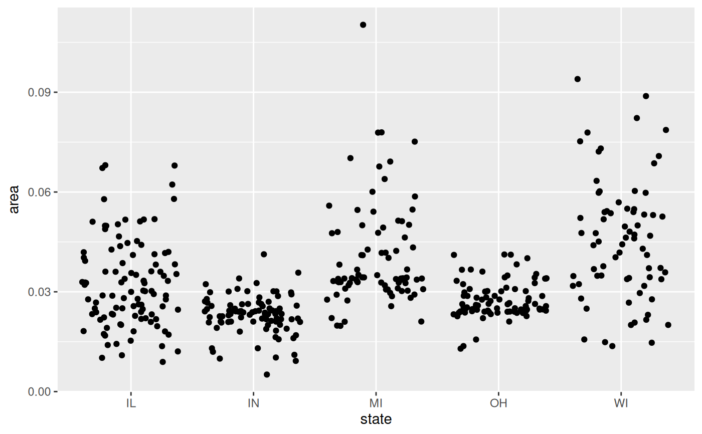
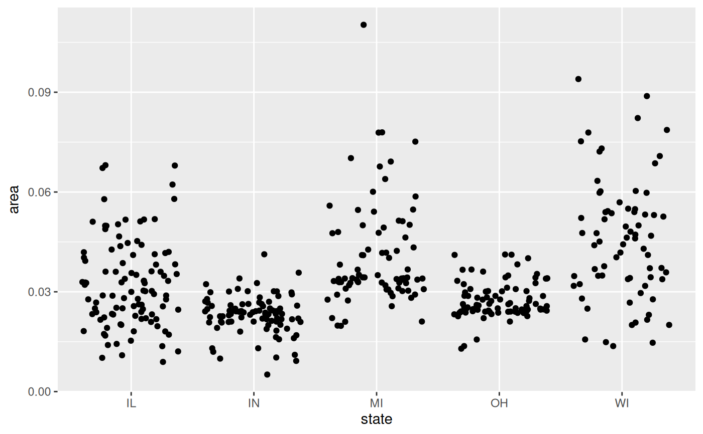
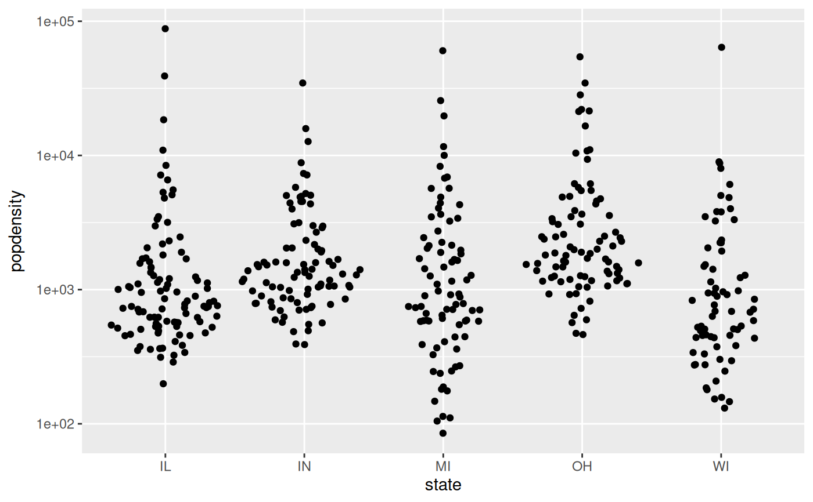
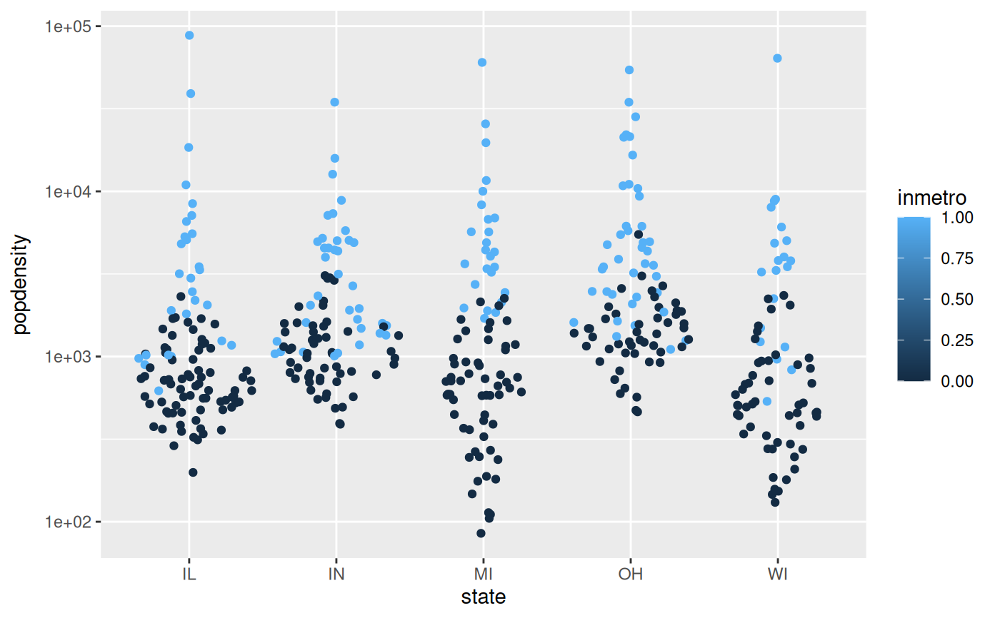
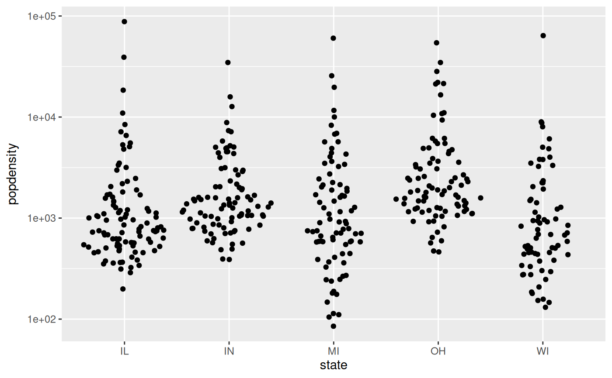
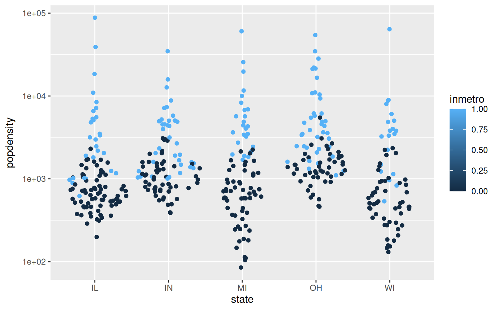
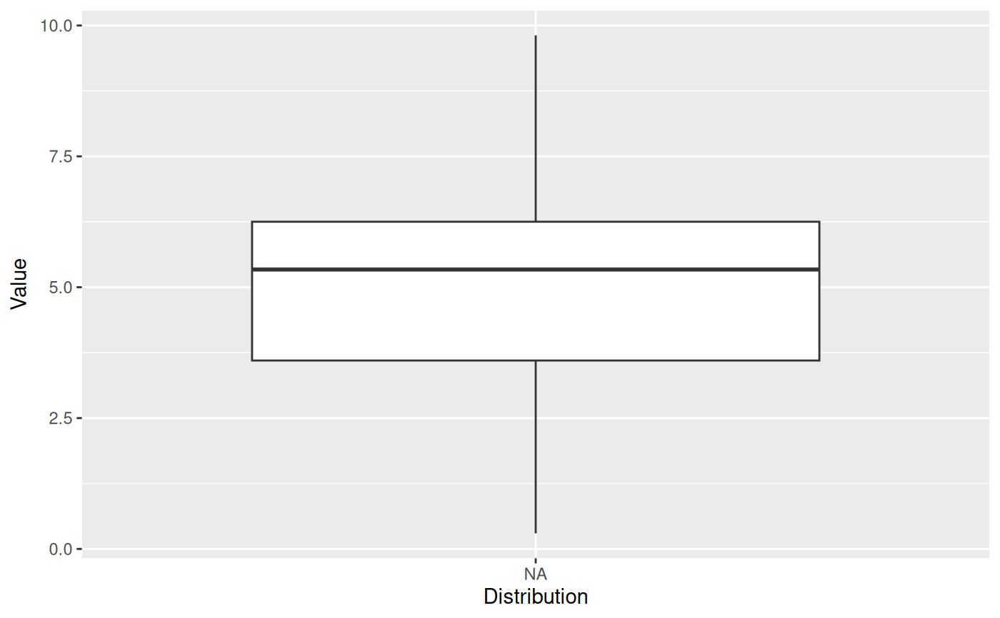
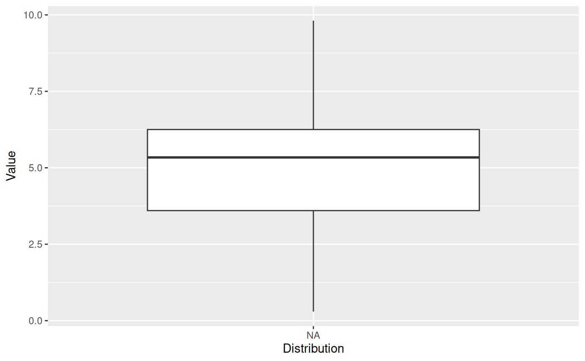
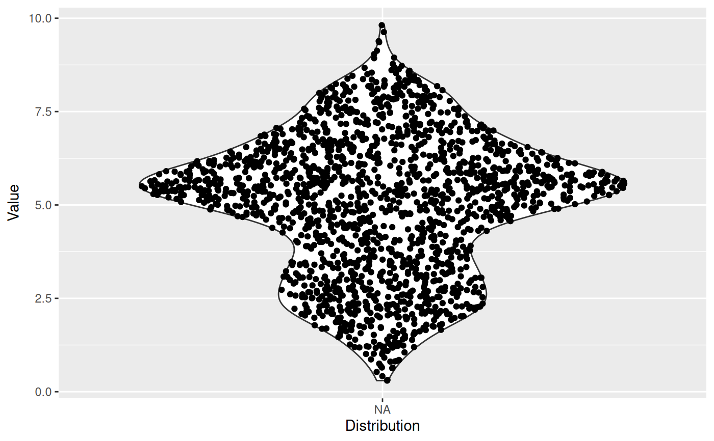
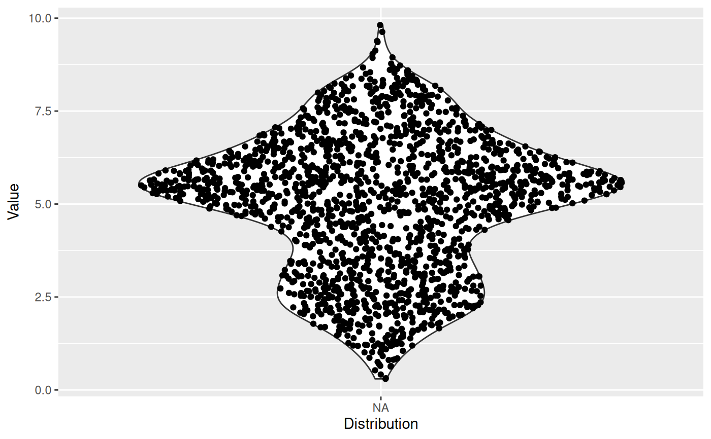

The sina plot is a data visualization chart suitable for plotting any single variable in a multiclass dataset. It is an enhanced jitter strip chart, where the width of the jitter is controlled by the density distribution of the data within each class.
Usage
stat_sina(
mapping = NULL,
data = NULL,
geom = "point",
position = "dodge",
scale = "area",
method = "density",
bw = "nrd0",
kernel = "gaussian",
maxwidth = NULL,
adjust = 1,
bin_limit = 1,
binwidth = NULL,
bins = NULL,
seed = NA,
jitter_y = TRUE,
...,
na.rm = FALSE,
orientation = NA,
show.legend = NA,
inherit.aes = TRUE
)
geom_sina(
mapping = NULL,
data = NULL,
stat = "sina",
position = "dodge",
...,
na.rm = FALSE,
orientation = NA,
show.legend = NA,
inherit.aes = TRUE
)Arguments
- mapping
Set of aesthetic mappings created by
aes(). If specified andinherit.aes = TRUE(the default), it is combined with the default mapping at the top level of the plot. You must supplymappingif there is no plot mapping.- data
The data to be displayed in this layer. There are three options:
If
NULL, the default, the data is inherited from the plot data as specified in the call toggplot().A
data.frame, or other object, will override the plot data. All objects will be fortified to produce a data frame. Seefortify()for which variables will be created.A
functionwill be called with a single argument, the plot data. The return value must be adata.frame, and will be used as the layer data. Afunctioncan be created from aformula(e.g.~ head(.x, 10)).- geom
The geometric object to use to display the data for this layer. When using a
stat_*()function to construct a layer, thegeomargument can be used to override the default coupling between stats and geoms. Thegeomargument accepts the following:A
Geomggproto subclass, for exampleGeomPoint.A string naming the geom. To give the geom as a string, strip the function name of the
geom_prefix. For example, to usegeom_point(), give the geom as"point".For more information and other ways to specify the geom, see the layer geom documentation.
- position
A position adjustment to use on the data for this layer. This can be used in various ways, including to prevent overplotting and improving the display. The
positionargument accepts the following:The result of calling a position function, such as
position_jitter(). This method allows for passing extra arguments to the position.A string naming the position adjustment. To give the position as a string, strip the function name of the
position_prefix. For example, to useposition_jitter(), give the position as"jitter".For more information and other ways to specify the position, see the layer position documentation.
- scale
How should each sina be scaled. Corresponds to the
scaleparameter inggplot2::geom_violin()? Available are:'area'for scaling by the largest density/bin among the different sinas'count'as above, but in addition scales by the maximum number of points in the different sinas.'width'Only scale according to themaxwidthparameter
For backwards compatibility it can also be a logical with
TRUEmeaningareaandFALSEmeaningwidth- method
Choose the method to spread the samples within the same bin along the x-axis. Available methods: "density", "counts" (can be abbreviated, e.g. "d"). See
Details.- bw
The smoothing bandwidth to be used. If numeric, the standard deviation of the smoothing kernel. If character, a rule to choose the bandwidth, as listed in
stats::bw.nrd(). Note that automatic calculation of the bandwidth does not take weights into account.- kernel
Kernel. See list of available kernels in
density().- maxwidth
Control the maximum width the points can spread into. Values between 0 and 1.
- adjust
A multiplicate bandwidth adjustment. This makes it possible to adjust the bandwidth while still using the a bandwidth estimator. For example,
adjust = 1/2means use half of the default bandwidth.- bin_limit
If the samples within the same y-axis bin are more than
bin_limit, the samples's X coordinates will be adjusted.- binwidth
The width of the bins. The default is to use
binsbins that cover the range of the data. You should always override this value, exploring multiple widths to find the best to illustrate the stories in your data.- bins
Number of bins. Overridden by binwidth. Defaults to 50.
- seed
A seed to set for the jitter to ensure a reproducible plot
- jitter_y
If y is integerish banding can occur and the default is to jitter the values slightly to make them better distributed. Setting
jitter_y = FALSEturns off this behaviour- ...
Other arguments passed on to
layer()'sparamsargument. These arguments broadly fall into one of 4 categories below. Notably, further arguments to thepositionargument, or aesthetics that are required can not be passed through.... Unknown arguments that are not part of the 4 categories below are ignored.Static aesthetics that are not mapped to a scale, but are at a fixed value and apply to the layer as a whole. For example,
colour = "red"orlinewidth = 3. The geom's documentation has an Aesthetics section that lists the available options. The 'required' aesthetics cannot be passed on to theparams. Please note that while passing unmapped aesthetics as vectors is technically possible, the order and required length is not guaranteed to be parallel to the input data.When constructing a layer using a
stat_*()function, the...argument can be used to pass on parameters to thegeompart of the layer. An example of this isstat_density(geom = "area", outline.type = "both"). The geom's documentation lists which parameters it can accept.Inversely, when constructing a layer using a
geom_*()function, the...argument can be used to pass on parameters to thestatpart of the layer. An example of this isgeom_area(stat = "density", adjust = 0.5). The stat's documentation lists which parameters it can accept.The
key_glyphargument oflayer()may also be passed on through.... This can be one of the functions described as key glyphs, to change the display of the layer in the legend.
- na.rm
If
FALSE, the default, missing values are removed with a warning. IfTRUE, missing values are silently removed.- orientation
The orientation of the layer. The default (
NA) automatically determines the orientation from the aesthetic mapping. In the rare event that this fails it can be given explicitly by settingorientationto either"x"or"y". See the Orientation section for more detail.- show.legend
logical. Should this layer be included in the legends?
NA, the default, includes if any aesthetics are mapped.FALSEnever includes, andTRUEalways includes. It can also be a named logical vector to finely select the aesthetics to display.- inherit.aes
If
FALSE, overrides the default aesthetics, rather than combining with them. This is most useful for helper functions that define both data and aesthetics and shouldn't inherit behaviour from the default plot specification, e.g.borders().- stat
The statistical transformation to use on the data for this layer. When using a
geom_*()function to construct a layer, thestatargument can be used the override the default coupling between geoms and stats. Thestatargument accepts the following:A
Statggproto subclass, for exampleStatCount.A string naming the stat. To give the stat as a string, strip the function name of the
stat_prefix. For example, to usestat_count(), give the stat as"count".For more information and other ways to specify the stat, see the layer stat documentation.
Details
There are two available ways to define the x-axis borders for the samples to spread within:
method == "density"A density kernel is estimated along the y-axis for every sample group, and the samples are spread within that curve. In effect this means that points will be positioned randomly within a violin plot with the same parameters.method == "counts":The borders are defined by the number of samples that occupy the same bin.
Aesthetics
geom_sina understand the following aesthetics (required aesthetics are in bold):
x
y
color
group
size
alpha
Computed variables
- density
The density or sample counts per bin for each point
- scaled
densityscaled by the maximum density in each group- n
The number of points in the group the point belong to
Orientation
This geom treats each axis differently and, thus, can thus have two orientations. Often the orientation is easy to deduce from a combination of the given mappings and the types of positional scales in use. Thus, ggplot2 will by default try to guess which orientation the layer should have. Under rare circumstances, the orientation is ambiguous and guessing may fail. In that case the orientation can be specified directly using the orientation parameter, which can be either "x" or "y". The value gives the axis that the geom should run along, "x" being the default orientation you would expect for the geom.
Examples
ggplot(midwest, aes(state, area)) + geom_point()
 # Boxplot and Violin plots convey information on the distribution but not the
# number of samples, while Jitter does the opposite.
ggplot(midwest, aes(state, area)) +
geom_violin()
ggplot(midwest, aes(state, area)) +
geom_jitter()

# Sina does both!
ggplot(midwest, aes(state, area)) +
geom_violin() +
geom_sina()
# Boxplot and Violin plots convey information on the distribution but not the
# number of samples, while Jitter does the opposite.
ggplot(midwest, aes(state, area)) +
geom_violin()
ggplot(midwest, aes(state, area)) +
geom_jitter()

# Sina does both!
ggplot(midwest, aes(state, area)) +
geom_violin() +
geom_sina()
 p <- ggplot(midwest, aes(state, popdensity)) +
scale_y_log10()
p + geom_sina()

# Colour the points based on the data set's columns
p + geom_sina(aes(colour = inmetro))

# Or any other way
cols <- midwest$popdensity > 10000
p + geom_sina(colour = cols + 1L)
p <- ggplot(midwest, aes(state, popdensity)) +
scale_y_log10()
p + geom_sina()

# Colour the points based on the data set's columns
p + geom_sina(aes(colour = inmetro))

# Or any other way
cols <- midwest$popdensity > 10000
p + geom_sina(colour = cols + 1L)
 # Sina plots with continuous x:
ggplot(midwest, aes(cut_width(area, 0.02), popdensity)) +
geom_sina() +
scale_y_log10()
# Sina plots with continuous x:
ggplot(midwest, aes(cut_width(area, 0.02), popdensity)) +
geom_sina() +
scale_y_log10()
 ### Sample gaussian distributions
# Unimodal
a <- rnorm(500, 6, 1)
b <- rnorm(400, 5, 1.5)
# Bimodal
c <- c(rnorm(200, 3, .7), rnorm(50, 7, 0.4))
# Trimodal
d <- c(rnorm(200, 2, 0.7), rnorm(300, 5.5, 0.4), rnorm(100, 8, 0.4))
df <- data.frame(
'Distribution' = c(
rep('Unimodal 1', length(a)),
rep('Unimodal 2', length(b)),
rep('Bimodal', length(c)),
rep('Trimodal', length(d))
),
'Value' = c(a, b, c, d)
)
# Reorder levels
df$Distribution <- factor(
df$Distribution,
levels(df$Distribution)[c(3, 4, 1, 2)]
)
p <- ggplot(df, aes(Distribution, Value))
p + geom_boxplot()

p + geom_violin() +
geom_sina()
### Sample gaussian distributions
# Unimodal
a <- rnorm(500, 6, 1)
b <- rnorm(400, 5, 1.5)
# Bimodal
c <- c(rnorm(200, 3, .7), rnorm(50, 7, 0.4))
# Trimodal
d <- c(rnorm(200, 2, 0.7), rnorm(300, 5.5, 0.4), rnorm(100, 8, 0.4))
df <- data.frame(
'Distribution' = c(
rep('Unimodal 1', length(a)),
rep('Unimodal 2', length(b)),
rep('Bimodal', length(c)),
rep('Trimodal', length(d))
),
'Value' = c(a, b, c, d)
)
# Reorder levels
df$Distribution <- factor(
df$Distribution,
levels(df$Distribution)[c(3, 4, 1, 2)]
)
p <- ggplot(df, aes(Distribution, Value))
p + geom_boxplot()

p + geom_violin() +
geom_sina()
 # By default, Sina plot scales the width of the class according to the width
# of the class with the highest density. Turn group-wise scaling off with:
p +
geom_violin() +
geom_sina(scale = FALSE)

# By default, Sina plot scales the width of the class according to the width
# of the class with the highest density. Turn group-wise scaling off with:
p +
geom_violin() +
geom_sina(scale = FALSE)
